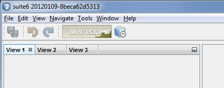
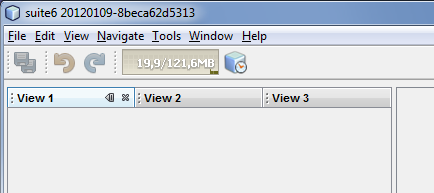

Apache NetBeans
Apache NetBeansHow can I customize the window system via the latest 7.1 techniques/enhancements?
Note: These pages are being reviewed.
When developing an application based on NetBeans platform there’s sometimes need to tweak the Window System for your target users. Here’s a couple of tips how to use various switches and options.
Use own JFrame instance as the main window
It is possible to use any JFrame instance as the main window. Simply create the instance when your module is being loaded (ModuleInstall.restored()) and set its name to NbMainWindow. When the window system loads it will pick this instance and initialize it with menu bar, status bar, toolbars, inner desktop hierarchy etc.
Mixing document and non-document windows
As of NetBeans 7.1 it is possible to mix document and non-document windows. It means it is possible for example to drag Projects window and drop it next to Java source editor. It is also possible to drag any editor window and dock it next to Project or Output windows. If you want to turn this feature off and revert to NetBeans 7.0 behavior use Mix.Editors.And.Views.Enabled branding property in org/netbeans/core/windows/Bundle.properties bundle.
Paint custom background
Boolean property NbMainWindow.showCustomBackground set to true in UIManager will make most of main window components transparent. So anything painted to main window root pane will be showing through its toolbars, menu bar, status bar and window borders. Use this property together with custom JFrame instance (see above) to paint custom images on main window background.
Turn some features on/off on TopComponent level
When creating a new TopComponent using NetBeans New File wizard you are presented a couple of option to modify window behavior. If you need to customize the behavior of an existing TopComponent or behavior of a TopComponent you don’t have sources to just use any of client properties listed below. For example:
WindowManager.getDefault().findTopComponent("output").putClientProperty("netbeans.winsys.tc.closing_disabled", Boolean.TRUE);
//nobody can close Output window now!-
netbeans.winsys.tc.closing_disabled - user cannot close the window - there is no close button and Close actions in the main menu is disabled. Closing the window by calling TopComponent.close() naturally still works.
-
netbeans.winsys.tc.sliding_disabled - user cannot minimize the window.
-
netbeans.winsys.tc.undocking_disabled - user cannot float the window.
-
netbeans.winsys.tc.dragging_disabled - user cannot drag and drop the window to a different location.
-
netbeans.winsys.tc.maximization_disabled - user cannot maximize window.
-
netbeans.winsys.tc.keep_preferred_size_when_slided_in - by default minimized windows take the whole main window height or width when being shown from minimize bar. Setting this client property to true will force the window system to use TopComponent’s preferred size when it is being slided in from the minimize bar.
-
netbeans.winsys.tc.draganddrop_copy_disabled - by default it is possible to clone a CloneableTopComponent by dragging its header while holding down CTRL key. To disable such cloning set this client property to true.
Turn some features on/off on window system level
If you want to customize features of all windows you can use the following branding properties. (See for example here how NetBeans branding works.)
-
TopComponent.DragAndDrop.Enabled - it is not possible to drag and drop any window when set to false.
-
TopComponent.Undocking.Enabled - it is not possible to float any window when set to false.
-
TopComponent.Sliding.Enabled - it is not possible to minimize any window when set to false.
-
TopComponent.Resizing.Enabled - it is not possible to resize any window using the splitter bars when set to false.
-
View.TopComponent.Closing.Enabled - it is not possible to close any non-document window when set to false.
-
Editor.TopComponent.Closing.Enabled - it is not possible to close any document window when set to false.
-
TopComponent.Maximization.Enabled - it is not possible to maximize any window when set to false.
-
Splitter.Respect.MinimumSize.Enabled - it is not possible to make any window smaller than its minimum size by dragging its splitter bars when set to true.
-
WinSys.Open.New.Editors.Docked - by default new document windows open next to the last active document window. If the last active document is floating then a new document will open tabbed next to that floating document. When this property is set to true then new documents will always open in the main window even if the last active document was floating.
-
WinSys.DragAndDrop.Sliding.Enabled - it is not possible to drag any window and drop it to a minimize bar to minimize it when set to false.
NetBeans version 7.1 introduced a concept of tab groups. All windows in the same docking spot form a tab group. For example Projects, Files and Services windows in the top-left corner of the main window belong into the same tab group. User can close/minimize/float the whole tab group with a single mouse gesture or keyboard shortcut. The following branding properties define which tab group actions are (not) enabled.
-
Mode.Closing.Enabled - set to false to disable tab group closing.
-
Mode.Sliding.Enabled - set false to disable tab group minimization.
-
Mode.View.Undocking.Enabled - set to false to disable floating of non-document tab group.
-
Mode.Editor.Undocking.Enabled - set to false to disable floating of document tab group.
-
Mode.View.DragAndDrop.Enabled - set to false to disable drag and drop of non-document tab group.
-
Mode.Editor.DragAndDrop.Enabled - set to false to disable drag and drop of document tab group.
-
TopComponent.Auto.Slide.In.Minimized.Mode.Enabled - when set to true then windows that belong to a minimized tab group will open as minimized. When set to false then windows that belong to a minimized tab group will open as docked (unminimized).
Customize non-document tabs layout
As of NetBeans 7.1 non-document windows in the same docking spot are organized into a tab group (see also above).

If you want to revert the tab layout back to the old behavior in NetBeans 7.0 then you must set system property winsys.stretching_view_tabs to true. Window tabs will then stretch to fill the whole width of the docking spot:

Please note that tab group actions (close group, float group, move group etc) will still be present in the main menu and in window’s context menu. Use the branding propeties above to remove those actions.
External Link
Up to date list of all Window System related properties and brading options should be available at architecture summary page.